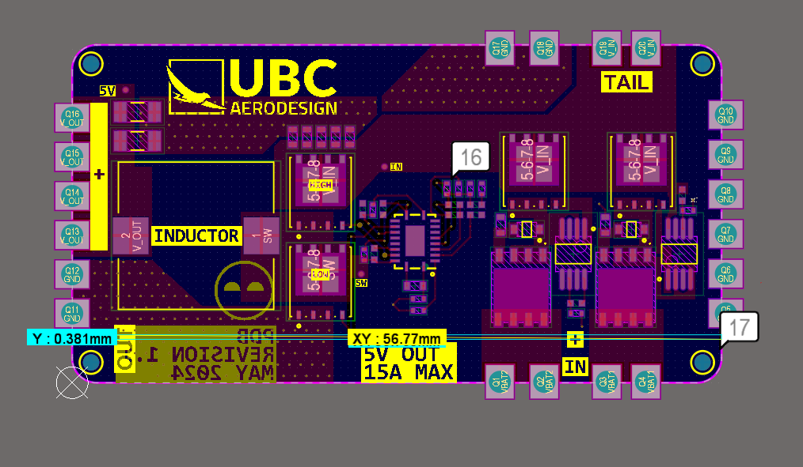

UBC AeroDesign Power Distribution Board
Project Images:

Learning:
- PCB design using Altium.
- PCB manufacturing and troubleshooting/testing.
- DC-DC converter design and topologies.
Project Overview
As part of my role on the avionics team at UBC AeroDesign, I designed a power distribution PCB for stepping down power from the main battery to the rest of the components on the plane. I:
- used Altium to design a 24V to 12V buck converter.
- assembled a PCB through a combination of hand and reflow soldering and conducted hardware troubleshooting tests.
Background
A buck converter is a type of circuit that is able to step down DC voltage through the use of a switch. This essentially works by rapidly switching on and off the switch. If, for a given period of time, the switch is off for an average of 50% of the period, the output will see a 50% reduction in voltage. This percentage of time that the switch is off compared to the overall period is called the duty cycle. This method of controlling the output through rapidly turning on and off a switch is called PWM, or pulse-width modulation.
Practically, an actual switch is not used. Most of the times, it's actually a transistor such as a MOSFET or BJT.
However, in those times where the switch is open, the voltage at the output will fluctuate. To maintain smooth voltage and current delivery even while the switch is off, an LC filter is implemented at the output. The inductor resists changes in current and emits an EMF to keep current flowing constant while the capacitor will also emit current when it senses a change in voltage (from the switch turning off).

To give the current a path back to the negative end of the inductor when the switch is open, we add a Schottky diode in parallel with the load and capacitor.
Buck converters are often used in power supplies due to their high efficiency, as the voltage is stepped down through a switch instead of dissipating voltage as heat (as seen in linear regulators). Moreover, buck converters can step voltage down from a wide range of input voltages to produce a wide range of output voltages.
Design and Manufacturing
Numerous buck converter ICs are available to purchase online. To pick the best suited choice for our requirements, I
For our initial testing, the protection circuits were removed as well as the castellated edges to save on cost.